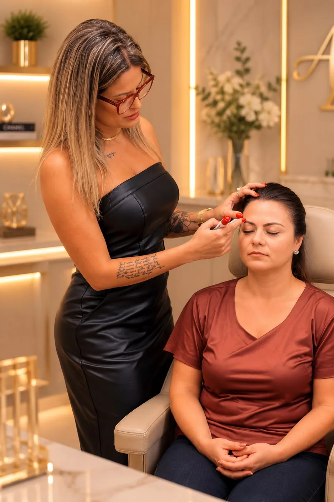
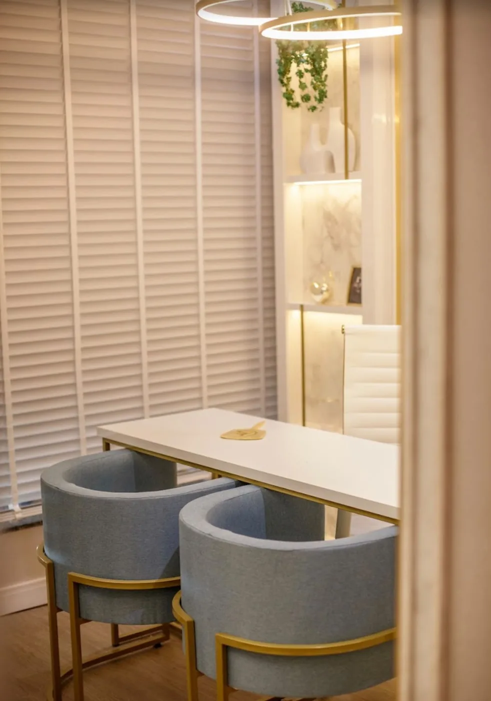

Criomodelagem: reduza medidas e valorize suas curvas.
Conheça a CRIO AS, a proposta da AS Beauty Center para gordura localizada, e agende sua consulta individualizada com a Dra. Aline Schweitzer.
- Procedimento sem cirurgia
- Consulta individualizada antes de tudo
- Acompanhamento pós-procedimento
Veja a diferença da criomodelagem
Casos de pacientes atendidas na AS Beauty Center.
Caso 01
Criomodelagem
Caso 02
Criomodelagem
Outros procedimentos
Flacidez corporal
Antes e depois
Rejuvenescimento facial
Antes e depois
Terapia capilar
Antes e depois
Beleza e bem-estar em um só lugar
Criomodelagem
Para gordura localizada. Conheça a proposta CRIO AS.
Saiba maisFlacidez corporal
Para dúvidas sobre firmeza da pele e estímulo de colágeno.
Saiba maisRejuvenescimento facial
Para linhas de expressão e mudanças faciais.
Saiba maisDepilação a laser
Para pelos indesejados, com o laser HAKON 4D.
Saiba maisTerapias capilares
Para queda capilar e saúde dos fios.
Saiba maisDrenagem linfática
Cuidado corporal com indicação feita em consulta.
Saiba mais

Por que escolher a AS Beauty Center?
Acolhimento imediato
Um ambiente calmo e silencioso, pensado para você desacelerar assim que chega.
Consulta sem pressa
Tempo dedicado a você para compreender seus objetivos, histórico e desejos estéticos.
Técnica e conforto
Procedimentos realizados com delicadeza, biossegurança rigorosa e tecnologia de ponta.
Acompanhamento
Sua jornada não termina ao fim da sessão: o pós-procedimento também é acompanhado.
Dra. Aline Schweitzer
Alta performance em estética avançada
Com uma trajetória construída em torno da ciência da estética, da precisão técnica e do aprimoramento constante, Aline criou a AS Beauty Center para ser a expressão de seu compromisso com a excelência.
Atuando no ensino e na mentoria, já formou mais de 2.000 profissionais em todo o país.
“Cuidar da estética também é entender a pessoa por trás dela.”
Quem conhece, recomenda
“A clínica proporciona uma experiência verdadeiramente diferenciada. Cada detalhe é cuidadosamente pensado, e me senti extremamente confortável e segura do início ao fim.”
“Que profissional maravilhosa! Eu amei meu tratamento, tive um ótimo resultado e o atendimento é impecável.”
“A clínica é muito acolhedora. No meu primeiro atendimento, me senti extremamente confortável e segura com a Dra. Aline.”
Tire suas dúvidas
As perguntas que mais recebemos sobre a criomodelagem e o agendamento.
Outra dúvida? Fale com a clínicaA criomodelagem dói?
[aguardando Dra. Aline]
Quantas sessões são necessárias?
[aguardando Dra. Aline]
Quais áreas podem ser tratadas?
[aguardando Dra. Aline]
Que cuidados devo ter depois do procedimento?
[aguardando Dra. Aline]
Como agendo minha consulta?
Pelo WhatsApp (48) 98843-0101.
Agende sua consulta
Agende sua consulta e conheça as possibilidades de cuidado da AS Beauty Center.
Falar com a clínica no WhatsApp